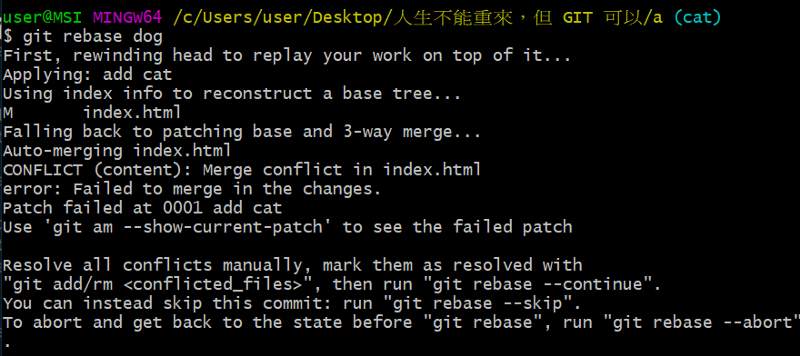

Git 學習筆記 (五) - 分支 & 標籤 & 兩者差異

九、分支
分支就像一個貼紙，指向某個 commit，內容是此 commit 的 SHA-1值 ( 40 個字元的檔案 )
1. 查詢與創建分支
1 | $ git branch // 查詢分支 |
2. 合併分支
2–1. 使用 merge
使用 merge 合併分支
1
2
3$ git merge dog // 所在分支合併 dog分支
// (merge後，所在分支指向 git 新產生的 commit 分支，而 dog 分支還是留在原地不動)
$ git merge dog --no-ff // 不使用快轉模式 ( Fast-forward )合併分支
還原合併 ( merge ) 前狀態
1
2
3$ git reset HEAD^ --hard // 還原 merge 前狀態 (使用 HEAD )
$ git reset SHA-1值 --hard // 還原 merge 前狀態 (使用 SHA-1值 )
$ git reset ORIG_HEAD--hard // 還原 merge 前狀態 (使用 ORIG_HEAD )
2–2. 使用 rebase
使用 rebase 合併分支
1
$ git rebase dog // 以 dog分支作為參考基準，將所在分支進行合併
還原合併 ( rebase ) 前狀態
1
2$ git reset SHA-1值 --hard // 還原 rebase 前狀態(使用 SHA-1值 )
$ git reset ORIG_HEAD--hard // 還原 rebase 前狀態 (使用 ORIG_HEAD )
2-3. merge 與 rebase 差異
merge：產生一個額外的 commit 來合併 2 個分支
rebase：以其中一個分支當作新的參考基準，往上合併
rebase 不會產生額外合併專用節點，且歷史紀錄是依誰 rebase 誰做決定
3. 當合併發生衝突
3-1. 文字檔衝突
當 cat分支 (所在分支) 合併 dog分支
- 使用 merge 合併發生衝突
1 | $ git merge dog // 合併發生衝突，會出現錯誤訊息 (進入 MERGING |
- 使用 rebase 合併發生衝突

1 | $ git rebase dog // 合併發生衝突，會出現錯誤訊息(進入 REBASE |
3-2. 非文字檔發生衝突
目前在 cat分支 上，要合併 dog分支，有同樣名為 cat.jpg 的檔案
1 | $ git merge dog // 合併發生衝突，會出現錯誤訊息 (進入 MERGING |
十、標籤
1. 標籤分類
輕量標籤 ( lightweight tag )
1
$ git tag 標籤標題 SHA-1值 // 新增輕量標籤
有附註的標籤 ( annotated tag )
1
$ git tag 標籤標題 SHA-1值 // 新增有附註的標籤
2. 查詢標籤資訊
1 | $ git show 標籤標題 // 顯示標籤資訊 |
3. 刪除標籤
1 | $ git tag -d 標籤名 // 刪除標籤 |
4. 輕量標籤 與 有附註的標籤 差異
輕量標籤 ( lightweight tag )
內容只是指向某個 commit

有附註的標籤 ( annotated tag )
除了指向 commit 以外，還有作者訊息、時間、標籤詳細內容
十一. 有附註的標籤與分支的不同
1. 檔案存放位置
分支 在 .git/refs/heads/master ( 以名為 master的分支為例 )
標籤 在 .git/refs/tags/beta ( 以名為 beta 的標籤為例 )
2. 會跟著 commit 移動
分支 會隨著 commit 移動，標籤 不會
3. 都是指向某個 commit
有附註的標籤 與 分支 都是指向某個 commit
Git 學習筆記 系列文章